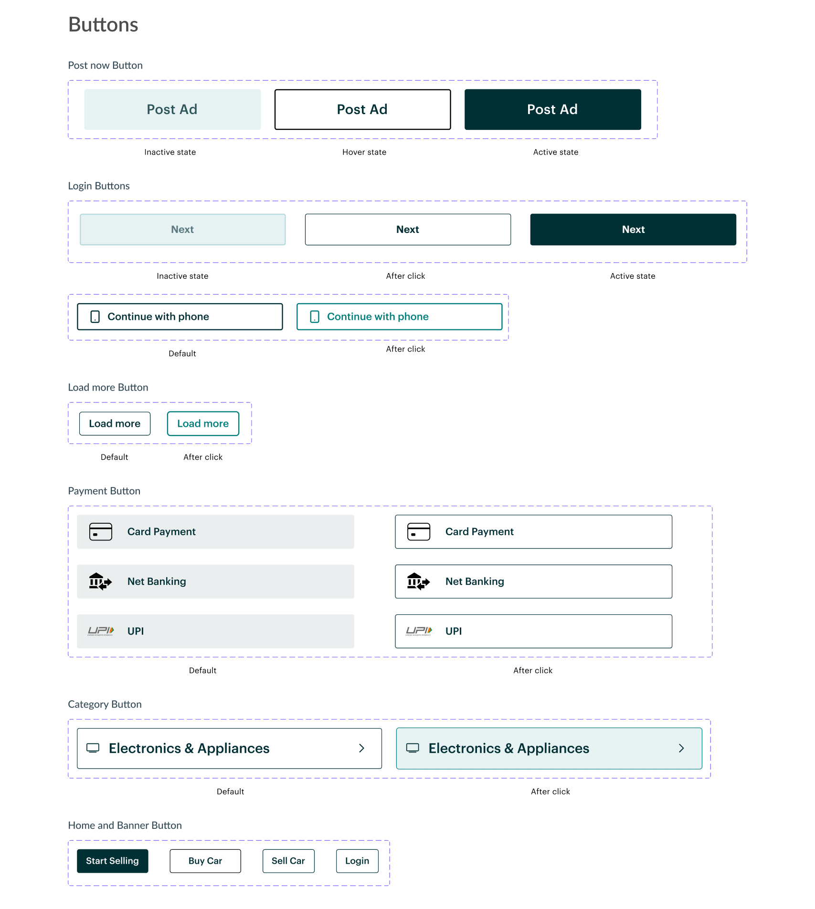
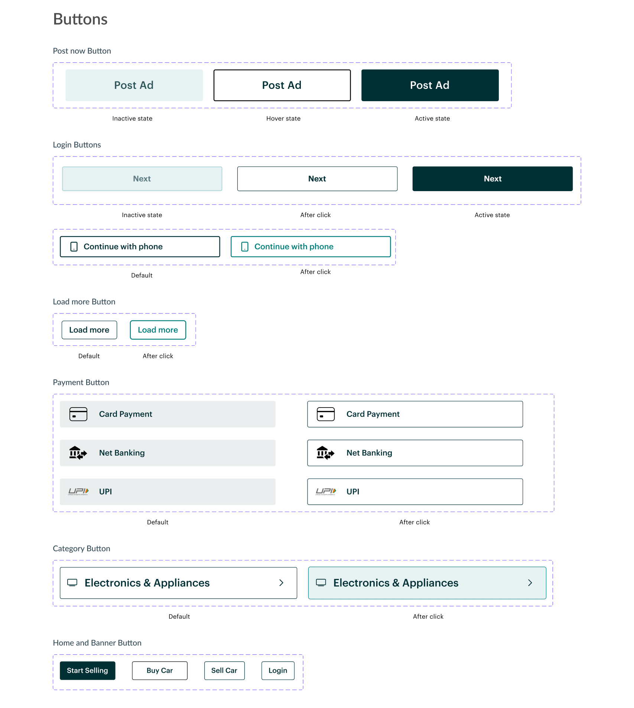

Hello there! I'm Tusharkanth Karlapudi
Product Designer pursuing Master's in Human-Computer Interaction. Well-versed in creating and maintaining design systems, and exploring service design space. Currently looking for full time opportunities starting May 2023.
Work
About Me

Known as Tushar. I am a product designer with a keen eye for detail. I believe in inclusivity and accessibility, and look to develop products which can contribute to the society positively. I have a bachelors degree in Computer Science from BITS Pilani, India.
Having developed my design thinking through various projects and work experience, I was able to embrace my creative side and apply my engineering lessons into my thinking. I aim to create interfaces and experiences which are user-friendly and developer-friendly.
I am always learning more about design, how it affects people and how it can improve their lives. I believe that teamwork is crucial to design and no problem is unsolvable.
Beyond design, I am an ambivert with love for soccer and tennis. I can geek out about comics, manga, Star Wars and LOTR. You can find me listening to classic rock, hard rock and blues.
Contact
Interested in getting in touch?
SmartHome
App to manage smart devices and appliances at home
Roles: UX Design & UX Research
Overview
As a part of the course project, I decided to create a smart home app. The aim of the app was to help the user to manage most, if not all, the smart devices available and in use to them at their home. Along with that, I wanted to give the user the option to create "scenes" or automations to further enhance their experience of using the smart devices.
Problem
Smart device users need a way to manage and control multiple smart home devices conveniently with their mobile phones.
Research
I interviewed 2 users for this project. One user owns multiple smart devices and the other owns only one smart device but plans to get more for their home. Questions were largely related to their experience using apps to control the devices they own. From the interviews, I found following issues come up:
- Devices in a single page or room are pretty scattered and not organized.
- Inability to control level of access for users other than the owner of the devices.
- Preference for a more minimal design compared to SmartThings.
Based on the interview outcomes and further study of the main competitors in this category, namely Apple Home, Google Nest, and Samsung SmartThings, I decided to focus on the following features:
- Device interactions: The usual interactions which involve turning a device on or off, tweaking the device settings (for eg. altering thermostat temperature), and as such.
- Adding devices and users.
- Creating automations involving multiple devices.
Information Architecture
Initial Sketches

Towards Final Design

Prototype
What Next?
- Need to expa nd more on each device's interaction through their respective settings page.
- Need to make the app more accessible.
- Perform proper user testing.
Learnings
This project presented me with the opportunity to work on an idea from start to finish and create a complete app. My prior experience in design was strictly focused on one or two screens or one particular feature of an existing app. But thanks to this project, I got a good grip on how to bring an idea for a complete app into reality.

OLX Redesign
Buy, sell or exchange goods
Roles: UX Design
Overview
OLX is a C2C platform for buying, selling or exchanging goods, like electronics, vehicles, appliances, furniture, daily items and so on. While it has gone through couple of iterations over the years, there are still some problems which can hinder the experience of using the website for the user. With this redesign, I am trying to address them.
Research
I started with understanding the user flow of the website which currently exists. I found out that there are two main flows: Selling products and Buying products.
After I understood the flows, I performed a heuristic evaluation, using Ben Shneiderman's 8 Golden Rules, and I found out the following problems:
Design System
Based on my sketches, I started working on components for the website. I wanted to keep quite a few elements which are part of the existing design and tweak few others to give a sleeker feel to the website.

 

Final Redesign


Feedback
I got my final designs peer-reviewed and following were the quotes I received in response:
- "Cleaner design with lot more breathing space"
- "Very compact and to the point"
- "Can try to work on a prototype to see how the interactions work"
Learnings
This project helped me improve my skills in heuristic evaluation & working on design systems. It helped me improve my critique skills and gave me a new perspective towards developing design systems.

Pay1
Creating a Design System
Role: UX Design
Overview
Pay1 focuses on providing digital payment platform for the businesses in the unorganized retail sector of India, and help them expand and scale better while achieving financial empowerment.
My responsibilities
As a UX Design intern, I worked with the design team and development team. We created the Pay1 Design System, inspired from Material Design. I also led the design of the user reward system in the Distributor app of Pay1, but I cannot delve into the details of the module due to NDA. Please contact me if you want further details regarding it.
I conducted user research, competitor analysis and user interviews, and tasked with creating information architecture, wireframes, visual design and prototypes for the user reward system, and focused on the design of the components in the Design System.

Building a design system
As Pay1 had multiple apps, each for different audience and with different features, there was a need for a design system and component library that represents the values of the company and provides a unified ecosystem for the apps. So this was one of the tasks which I started with when I joined the company. The work was already started by the existing design team a little before I joined and I was tasked with creating the components and contribute to the color palette, which you can see below.

When I started working on the design system, user research had been conducted, where we got the answers to questions related to the customer experience, usability, intuitive nature of the apps, and cohesive nature of the apps. That gave us a solid platform to work on. We drew inspiration from Material Design principles and got to work.

Components
The design team conducted a meeting with the developers, product managers and stakeholders to understand the parts of the apps we had and prioritize which parts needed to be a common component and get their ideas on the design system. The decisions were made based on user data collected from the app and user interviews conducted.
After we decided on the components, I started designing the Dialog boxes, Overlays, Cards, Lists and Buttons used in the apps. Idea was to keep the UI simple and make it accessible as the target audience is a largely uneducated or less exposed to the smartphone culture. This drove the developement of the design system as a whole, while striving for a more organized foundation based on which designs can be made for Pay1.

Learnings
Despite the short time spent with the team, I gained experience with the process of creating a unified design system, performing user research, user journey mapping, and usability testing. This internship gave me the chance to work as a pure designer and the opportunity to be a part of the product thinking process. The experience working as a developer helped me get my points and design decisions across the developer team.

GroupFit
Promote a collaborative way of keeping yourself fit and healthy
Overview
GroupFit is an app solution for an 8 hour long hackathon.
Problem
Maintaining fitness with a busy work schedule is tough. It is a struggle to get into a routine. A solution is needed to help keep the user motivated to keep a daily routine and provide some support with their efforts.
Solution
An easy-to-use app which provides the user to form groups with friends and people with similar interests and participate in group activities based on each person's schedule, thereby promoting collaboration among the users with respect to fitness.
Research
From the user research I conducted for this problem, I was presented with following findings:
- Scheduling time for exercise is tough.
- Having others performing the same activity as the you gives motivation to do the activity themselves.
- Knowledge of activites happening around you helps in engaging with new people.
- Less complicated app will be helpful.
Information Architecture

Upon analysis with apps like MyFitnessPal and the user interviews, I found that the community aspect has been overlooked more often than not. They rely on the user to be accountable for themselves. While the approach isn't wrong, but the advantages of working out as a group cannot be underestimated. It helps in lowering stress, making exercise more engaging and fun, and thus helping people to be more motivated to continue the routine. This is why I chose to focus on this aspect in this app.
Mid-fidelity Wireframes


One of the key components of this app is the scheduling of activities and integrating it with Google Calendar. Another notable point is that the app only suggests activites and people based on the availability in their schedules and activity preferences.
Learnings
This project helped me improve my skills in prototyping and design thinking. Due to the very short time, it was a challenge to be able to implement most of my ideas, conduct a more thorough user research and conduct user testing. On the other hand, I was able to experiment with my visual design and try interactions which isn't common practice in most apps. While there is scope for improvement in the app, in terms of accessibility, design, and features, I wanted to showcase what I was able to do in short space of time with limited resources.
Arzooo
Developing a B2C platform and internal dashboards
Roles: UX Design & Web Development
About the company
Arzooo is a platform which aims to provide a digital inventory to the retailers on ground, along with sourcing and services to compete with online stores and drive up their sales.
My roles and responsibilities
As a front end developer at Arzooo, I worked on multiple products, providing support in both tech and design aspects of the products. Being a rapidly growing startup, Arzooo gave me the opportunity to work on a wide array of technologies and helped me improve my skills as a developer and as a designer.
On most projects, I was tasked with performing the user research for products and handle the development cycle. I also worked on visual design, interaction design and user journey mapping primarily.
My work here at Arzooo is under NDA. So if you want to discuss more about the projects and my role in them, do contact me.
More about my work
I worked on their B2C platform called GoStor as a developer initially and then took over the UI/UX design of the website. I worked with Adobe XD and Photoshop to create wireframes and visuals for the website, and worked with React.js to develop the website. Recently, the website is undergoing a massive shift, triggered by key decisions taken by the stakeholders and I presented a revised design system for the new platform, which now will be used for the platform as it goes under the revamp at the moment.
I also developed the home website of Arzooo along with the lead front end developer. My role was to create the webpage and the components involved while the lead developer worked on the interactions. Along with this, I also was responsible for developing internal dashbaords which were used by the business, finance and analytics teams, to maintain smooth functioning of the daily processes, helping improve the efficiency by 20%.
Another contribution came in the form of The Electronics for which I acted as the main front-end developer, while chipping in with occasional design decisions.
Learnings
Thanks to the different projects I was part of, I got the opportunity to understand how business decisions are taken with respect to the product and how inputs from stakeholders should be incorporated in the designs. It also helped me understand how I can communicate design decisions to the development team and also understand both the sides during product development cycle.
Deloitte US
Developing IIoT and AI solutions
Roles: UI Design & Web Development
About the company
Deloitte is one of the most well-known companies in the world and also a part of the Big 4 in the the consulting industry. I was lucky to start my career at this company.
My roles and responsibilities
While my role by name was that of a technology analyst, thanks to the diverse team I was a part of, I was able to work in interesting projects and in different capacities.
I got to do user research in a controlled environment, plan the requirements and outcome based on inputs from stakeholders, and develop desktop applications. I was the UX designer and lead developer for a project involving creation of an internal assessment tool.
My work at Deloitte US is under NDA, hence I cannot show you my work in any capacity. If you want to discuss my work, do contact me.
More about my work
I primarily developed smart factory solutions for clients in the manufacturing sector using React.js and Vue.js mainly. These projects involved meetings with stakeholders, tech architects, managers and developers and gave me an insight into how product development cycle works from start to finish and helped me understand how to work with client demands and balance it with feasibility and good UX. All my projects followed Agile methodology.
I also had the opportunity to work on an internal assessment tool as a UX designer and lead developer, where I followed Material Design and used Invision and Zeplin and developed the tool using React.js. I worked with the stakeholders and senior managers involved in the project. This was my first real project where I was able to oversee the product development from start to finish, and helped me find my interest in product design.
Learnings
As this was my first job after graduating, I got exposed to a lot of processes which are used for developing a product and methodologies like Agile, CI/CD and LeanUX. I gained a perspective regarding how development works and how interaction between design teams and development teams happen. I gained some valuable experience in creating and using components and design systems, and also developing desktop based clients and applications.